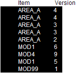
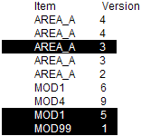
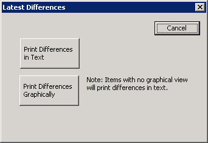

Print latest changes
For every unique version of an item selected in the History Report dialog, the Print Latest Changes button prints the differences between the selected version and the previous version. For example, if you have version 3 of an item selected, the Print Latest Changes button prints the differences between versions 2 and 3 of the item.
If multiple items (or rows) are selected in the History Report, for all unique combinations of an item and its version number (for example, AREA_A and version 4) a difference report is printed for that item comparing that version with its previous version (in this case, AREA_A version 3 to version 4 differences). Multiple selections of a combination of item and version number are ignored. For example, if the list of items looks like:

and all rows were selected as shown, the output would consist of the following:
- Difference report for AREA_A from version 3 to 4
- Difference report for AREA_A from version 2 to 3
- Difference report for AREA_A from version 1 to 2
- Difference report for MOD1 from version 5 to 6
- Difference report for MOD1 from version 4 to 5
- Difference report for MOD4 from version 8 to 9
- Single page output for MOD99 that says: No differences between versions 0 and 1 for object System Configuration/Control Strategies/AREA_A/MOD99. The graphical differences report would show version 1 of MOD99 with no color highlighting.
If only the rows shown below were selected:

The output would consist of the following:
- Difference report for AREA_A from version 2 to 3
- Difference report for MOD1 from version 4 to 5
- Single page output for MOD99 that says: No differences between versions 0 and 1 for object System Configuration/Control Strategies/AREA_A/MOD99. (The graphical differences report would show version 1 of MOD99 with no color highlighting.
With one or more items selected in the History Report, click the Print Latest Changes button. The Latest Differences dialog opens.

Click a button to print the differences reports in text or graphically.